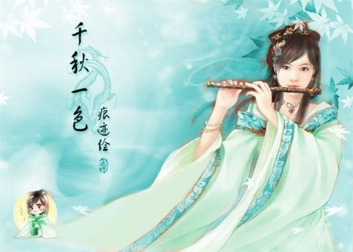

花开若相惜,花落莫相离。
收我南窗梦一帘,人间故事密封缄。迎将冷淡到江南。 身逐空花归净界,愿随清月落寒潭。红尘隔断两无堪。
个人资料
姓名：MAOLAI
网名：草戊水来
主页：www.lmlblog.com
现居：广州天河
职业：网站运营
最近访客

我的音乐
最新博文
梅花吹雨闻笛声
青山绿水间，笛声响起，清澈、悦耳、嘹亮，宛如溪水，潺潺流过沟涧，叮叮咚咚的敲起许多音符，画面虽美，却也只是一副画，而这笛声，真的从画中流出。
和着水波潋滟的浮沉，剪下一段心情，听那云烟深处，此时的岸此时的景，千流万壑，孤吟寒水中，遥遥回眸不禁问诗人：馀音空中尚飘荡，不知人在否!
彼岸花开，生生相错，唯有这绕耳的笛声还在诉说着凄美故事。碧波湖畔，红桃绿柳，盈盈一水，脉脉无语，不知这样的无奈横亘了多久，笛声轻起，比相思更浓，比忧怨更深，自笛声飘起的那一刻，便记载和传递了千年后物是人非的牵牵绊绊。

灯火阑珊，笛声轻绕，逆流而溯，那情那景依然停驻在笛声起时，银汉迢迢，佳期如梦，金风玉露，秋水难断，唯笛声不残，幽幽绕耳。
笛当是紫竹做，和着梅花的清傲与竹虚柔之韵，缥缥缈缈的清音柔滑如少女的纤手，牵着你穿越溪流，穿越红尘，停留在你记忆中的某个瞬间，直至入心入骨。笛中曲，月下人，月不落，笛岂终，斯境中，这一刻，听的人，歌之人，谁又分得清谁在月外谁又在月中，只看见那细按香盈的手，漾出一脉清流，只那么静静的远远的吹过来，不由人感叹：月下笛吹，吹净遥碧已无声…… ――清风明月
梦中桥
这是一个寂静的夜，雨像雾一样飘散着，落下来。路旁的法国梧桐叶已泛黄，偶有几片落下，很轻，很慢，几分依恋，几分不舍。你和我并行在人行道上，我没有牵你的手，你也没有挽着我，就这麽默默地走着。任细雨打湿我们的发梢。 夜风已冷，我感觉到你的颤抖，脱下外衣给你披上，你没有拒绝，闪着泪花的眼神在我看你的瞬间转移。
一路无语，你我各自低头渐行。我不敢抬头，生怕一抬头就到了路的尽头。可我们已踏上了那座熟悉的桥。桥的那边，就是你的家。已经到了该分手的时候。是啊，今晚是你我最后的夜晚，明天，你将离我而去，开始新的生活。
你转过身，想脱下披在身上的外衣，扯着衣领的手却停在那里;我想最后一次拥抱你，抬起的手却怎麽也伸不出去。就这样，我们站了很久。你忽然抬起头，说了声谢谢。这句谢谢，不知道包含了什麽，却像利刃一样扎在我的心。这是你第一次对我说这两个字。
你重重的叹了口气，将外衣递给我。泪光再次从你的眼中闪起。再没说一句话，你转身离去。走的那么果断，那么的义无反顾，甚至没有说一声再见，没有看我已流泪的眼。
我从梦中醒来，发现已泪湿枕边。我的心变得沉重，开始伤感起来。只不过是一个梦而已，我开始宽慰自己。 。
从那时起，桥，给我的感觉，就是合与分的终点。不管是牛郎织女相会的鹊桥，还是许仙与白娘子相识的断桥，还有克罗宁和玛拉的断魂蓝桥，到头来都是悲凄的结果。――梦里花开